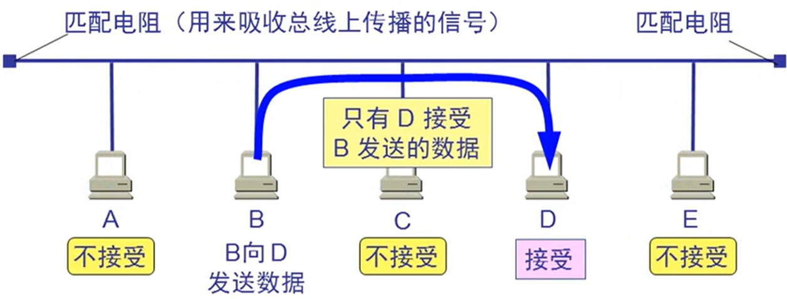
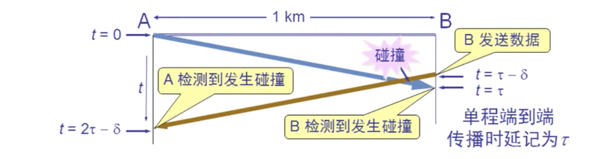

使用广播信道的数据链路层(局域网) 链接到标题
局域网最主要的特点: 链接到标题
网络为一个单位所拥有，且地理范围和站点数目均有限。
局域网具有如下的一些主要优点：
- 具有广播功能，从一个站点可以很方便的访问全网。局域网上的主机可共享连接在局域网上的各种硬件和软件资源。
- 便于系统的扩展和逐渐地演变，各设备的位置可灵活调整和改变。
- 提高了系统的可靠性，可用性和生存性。
共享通信媒体 链接到标题
静态划分信道 链接到标题
- 频分复用
- 时分复用
- 波分复用
- 码分复用
动态媒体接入控制(多点接入) 链接到标题
- 随机接入(主要被以太网采用)
- 受控接入 ,如多点线路探询，或轮询。(目前已不被采用)
认识以太网 链接到标题

最初的以太网是将许多计算机都连接到一根总线上。当初认为这样的连接方法既简单又可靠，因为总线上没有有源器件。
总线上的每一个工作的计算机都能检测到 b 发送的数据信号.
由于只有计算机 D 的地址与数据帧首部写入的地址一致，因此只有 D 才接收这个数据帧。
其他计算机都检测到不是发送给他们的数据帧，因此就丢弃这个数据帧而不能接收下来。
具有广播特性的总线上实现了一对一的通信。
带冲突检测的载波监听/碰撞检测 链接到标题
CSMA/CD: Carrier Sense Multiple Access with Collision Detection 多点接入: 表示许多计算机以多点接入的方式连接在一根总线上。 载波监听: 是指每一个站在发送数据之前先要检测一下总线上是否有其他计算机在发送数据，如果有，则暂时不要发送数据，以免发生碰撞。
载波监听就是用电子技术检测总线上有没有其他计算机发送的数据信号
碰撞检测 链接到标题
碰撞检测就是计算机边发送数据边检测信道上的信号电压大小。
当几个站同时在总线上发送数据时，总线上的信号电压摆动值将会增大(互相叠加)
当一个站检测到的信号电压摆动值超过一定的门限值时，就认为总线上至少有两个站同时在发送数据，表明产生了碰撞。
所谓碰撞就是发生了冲突，因此碰撞检测也被称为冲突检测
检测到碰撞后: 在发生碰撞时，总线上传输的信号产生了严重的失真，无法从中恢复出有用的信息来。 每一个正在发送数据的站，一旦发现总线上出现了碰撞，就要立即停止发送，免得继续浪费网络资源，然后等待一段随机时间后再次发送.
传播时延对载波监听的影响 链接到标题

CSMA/CD 的重要特性 链接到标题
- 使用 CSMA/CD 协议的以太网不能进行全双工通信而只能进行双向交替通信(半双工通信)。
- 每个站在发送数据之后的一小段时间内，存在着遭遇碰撞的可能性。
- 这种发送的不确定性使整个以太网的平均通信量远小于以太网的最高数据率。
争用期 链接到标题
最先发送数据帧的站，在发送数据帧后至多经过时间 2γ(2 倍的端到端往返时延)就知道发送的数据帧是否遭受了碰撞。
经过争用期这段时间还没有检测到碰撞，才能肯定这次发送不会发生碰撞。
以太网的争用期：
- 以太网的端到端往返时延 2γ 称为争用期，或碰撞窗口。通常，取 51.2us 为争用期的长度。
- 对于 10mb/s 以太网，在争用期内可发送 512bit，即 64 字节。
- 以太网在发送数据时，若前 64 字节未发生冲突，则后续的数据就不会发生冲突。
最短有效帧长：
- 如果发生冲突，就一定是在发送的前 64 字节之内。
- 由于一检测到冲突就立即终止发送，这时已经发送出去的数据一定小于 64 字节。
- 以太网规定了最短有效帧长为 64 字节，凡长度小于 64 字节的帧都是由于冲突而异常中止的无效帧。
二进制指数类型退避算法 链接到标题
发生碰撞的站在停止发送数据后，要推迟一个随机时间才能在发送数据。
确定基本退避时间，一般为争用期 γ。
定义参数 k
k = min[重传次数，10]
从整数集合[0,1…(2 的 k 次方-1)]中随机地抽取一个数，记为 r。重传所需的时延就是 r 倍的基本退避时间。
当重传达 16 次仍不能成功时即丢弃该帧，并向高层报告。